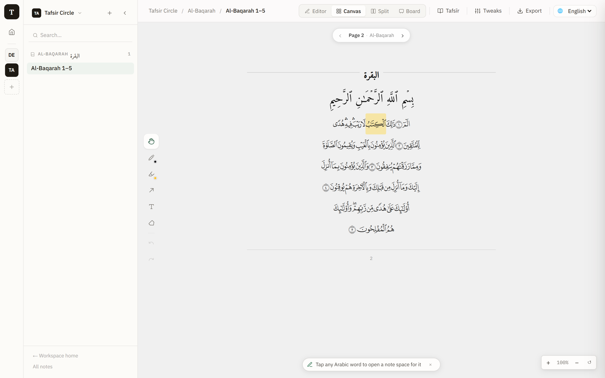
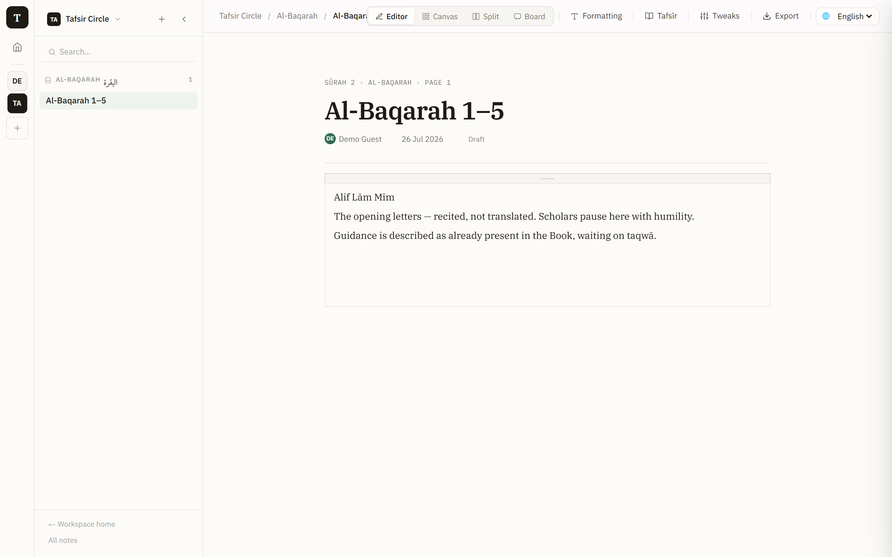
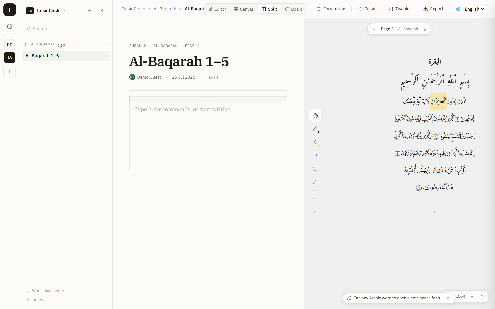
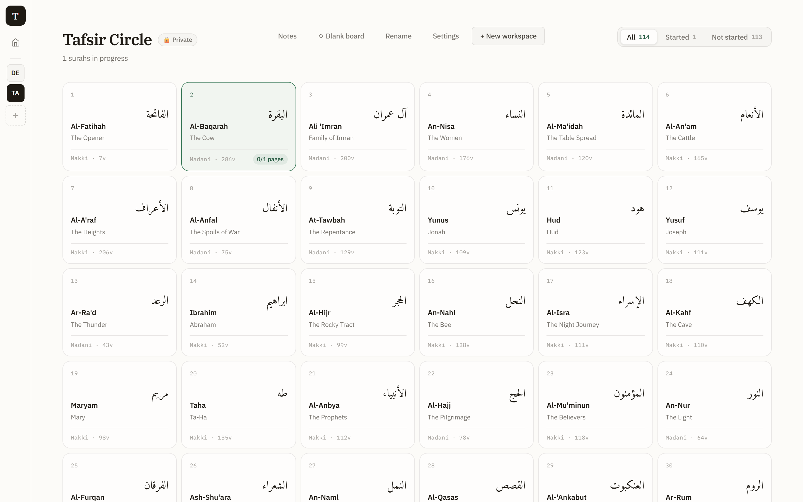
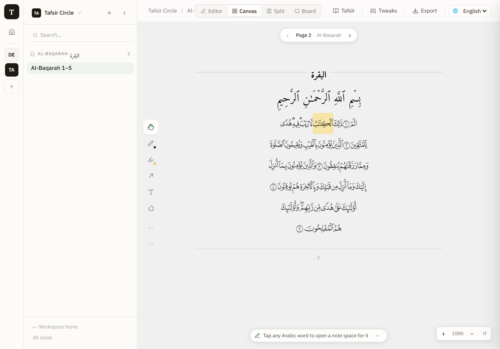
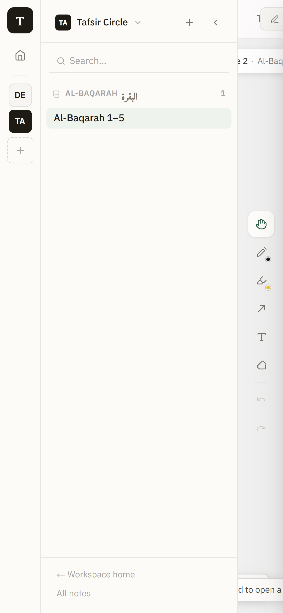

Have
you
ever
wanted
to
study
the
Qur’an…

Study
every
word.
Word note · 2:2
rayb
— doubt that unsettles. The ayah negates it entirely.
Write.
Draw.
Reflect.

/ayah
Al-Baqarah 2:2 embedded inline
Your
study.
Your
structure.

Ibn Kathīr
· English
Maˊārif al-Qurʼān
· English
Al-Saˊdī
· Arabic
Explore
tafsir
in
Arabic
and
English.

TA
YS
HM
Tafsir Circle · 3 studying
Yūsuf added a note
“Guidance is promised to those who already carry taqwā.”
Study
alone.
Or
together.


Available
across
your
devices.
Best experienced on desktop and tablet.
T
TafsirLab
Go
deeper
with
every
ayah.
Open the lab — free
tafsirlab.com